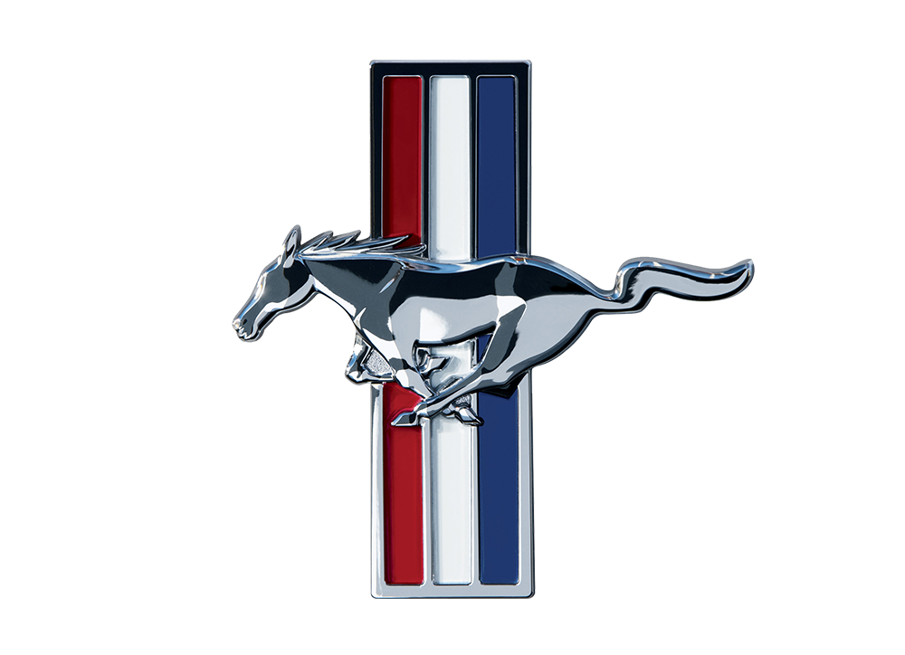
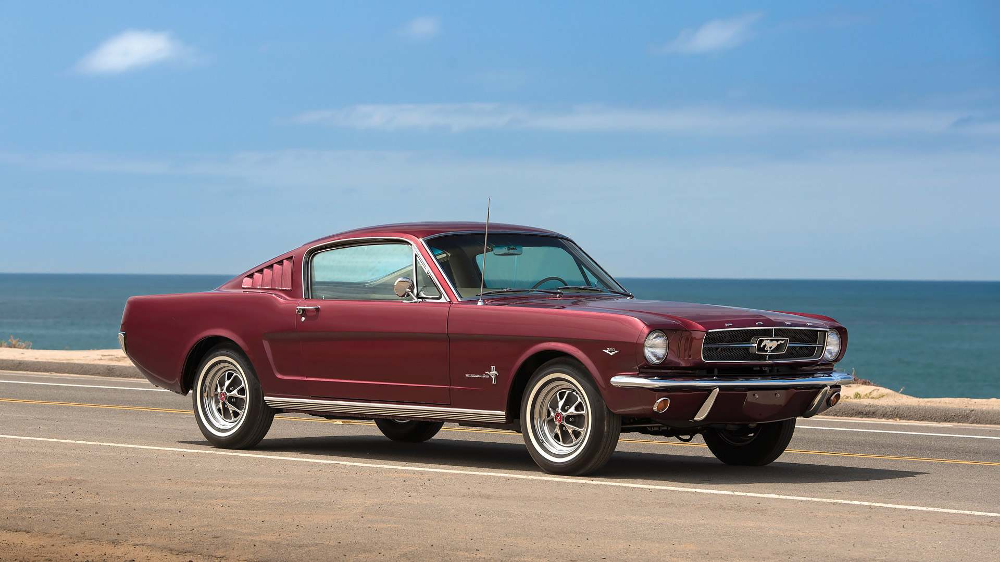
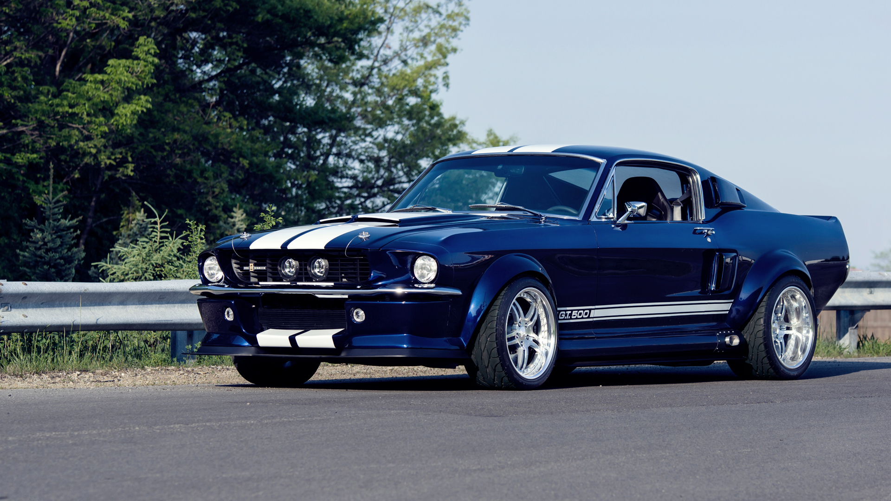
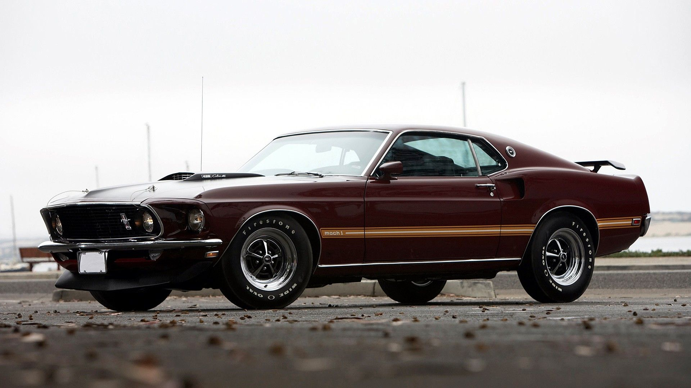
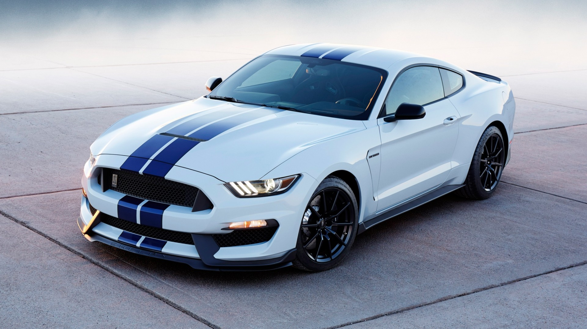

Mustang
Bakgrunn
Ford byrja å produsere Mustangen for å duellere med Chevrolet sin Corvair, og det klarde dei. Mustangen selde mykje betre enn Corvairen, noko som førte til at Corvairen blei teken ut av produksjon. Det første året Ford produserte Mustang, var i 1964 og dei driv fortsatt på i dag. Ford har også hatt eit tett samarbeid med kappkøyraren Carol Shelby. For å markere dette byrja Ford å produsera ein eigen versjon av Mustangen, nemleg Mustang Shelby. Denne utgåva var kraftigar og meir sportsleg. Mustang er eit amerikansk ikon og vil alltid vere det.
LOGO

Viktige periodar
1964

Den første mustangen blei lansert i april 1964. Den blei ein ekstrem suksess året etterpå, med store salgstal. Mustangen var ein av dei billegare sportslege bilane på markedet. Den var ikkje meint som ein super sportsleg bil, men meir som ein praktisk bil ein kunne ha det moro med.
1965-1970

Shelby utgåva av mustangen er den kraftigaste av dei. Den vart sett i produksjon av legenden Carol Shelby. Han hadde ein stor lidenskap for fart, og var ein kjend kappkøyrar. Carol hjalp Ford med å vinne det verdskjende 24 timars løpet Le Mans over Ferrari.
1968-1972

Mach 1 blei introdusert i 1968 av Ford. Det var ein oppgraderingspakke på den originale Mustangen. I pakken følgde også eit lengre karosseri og kraftigare motor.
2015-2019

Etter ein dårleg periode på 25 år, er den nye mustangen er tilbake til sine røtter. Den har liknande design som Mustangen hadde på 60- og 70-talet. No kan ein få ein skikkeleg V8ar med 650 hestekrefter.